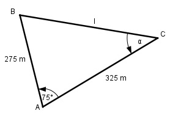

Aufgabe 197 Vom Punkt A aus gehen in einem Bergwerk 2 waagerechte Stollenunter einem Winkel von 75° mit 325 m und 275 m Länge ab. Welche Länge l hat ein Verbindungsstollen zwischen den beiden Endpunkten? Unter welchem Winkel α muss er vom Endpunkt des längeren Stollen ausvorangetrieben werden?

Cosinussatz: Fall SWS BC2 = AB2 + AC2 - 2 * AB * AC * cos 75° BC2 = 2752 + 3252 - 2 * 275 * 325 * 0,2588 BC2 = 134 989,5 |√ BC = 367,4 m = l Fall SSW: Sinussatz: BC AB ----------- = -------- |*sin α sin 75° sin α BC * sin α ------------ = AB | *sin 75° sin 75° BC * sin α = AB * sin 75° | :BC AB * sin 75° 275 m * 0,9659 sin α = -------------- = ------------------ = BC 367,4 m = 0,723 --> α = 46,3°